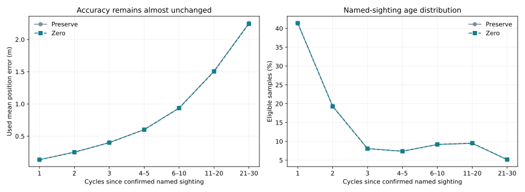
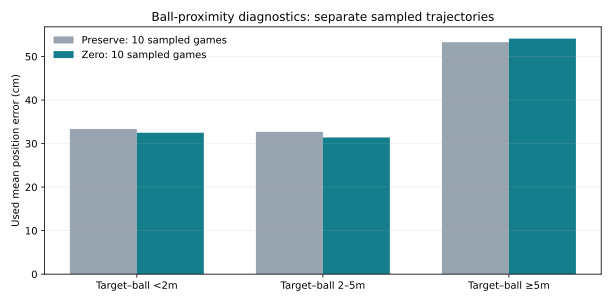

Later integration finding: the earlier apply path duplicated derived player-cache entries and could repeat identity inference. The current cache-v2 build fixes this. These historical match outcomes are not a clean gameplay evaluation of the intended prediction policy. See the final report.
The zero-count setting works. The observed match result is better than the preserve batch, but the team has not demonstrated a gameplay advantage over stock. Position accuracy is almost identical in the two model batches.
Generated 2026-11-17 19:37 UTC. Current logs: /home/nader/workspace/denoise/logs/exp5-live-zero.
Both model batches have200 complete games /4,400 finalized observers. Left
uses the same frozen model; right is off. Only effective position-count policy
changes from preserve to zero; both teams retain adaptive views. Game seeds
are different, so comparisons are unpaired and trajectories are not identical.
| Batch | Goals L–R | W / D / L | Points L–R | Win rate excluding draws |
|---|---|---|---|---|
| Stock baseline | 678–660 | 87/44/69 | 305–251 | 55.77% |
| Apply / preserve | 628–705 | 75/30/95 | 255–315 | 44.12% |
| Apply / zero | 704–715 | 85/30/85 | 285–285 | 50.00% |
The decisive-game rate excludes draws (zero:85/(85+85)=50%). Its Wilson95% interval is[42.57%, 57.43%]. The ordinary win rate, including draws in the denominator, is85/200=42.5%; it must not be compared directly with50% as though every game were decisive.
Left-minus-right goals/game changed −0.385 →−0.055 from preserve to zero, an observed +0.330. Independent whole-game bootstrap95% interval for that change: [-0.165,+0.815]. It includes zero, so these200-game batches do not establish that the improvement was caused by the count switch. There are no shared simulator/order-seed pairs between the two runs.
Compared with the historical all-stock Exp5 batch, the zero-count change in goal difference is-0.145/game, 95% bootstrap interval[-0.615,+0.325]. This also includes zero. The historical stock batch is a separate run, not a matched-seed control.
Each eligible target-cycle has equal weight. The denominator requires a valid identified stale WM position, original posCount>0, named-sighting age1–30, PlayOn and same-cycle truth. Unselected rows retain WM and remain included. Fresh/invalid/unsupported tracks are not included in these accuracy means.
| Metric | Preserve | Zero |
|---|---|---|
| Paired eligible samples | 116,211,295 | 115,986,537 |
| Original WM mean error | 141.55cm | 143.05cm |
| Used mean error | 52.62cm | 52.58cm |
| Mean-error reduction | 62.83% | 63.24% |
| Improved by >1cm | 54.94% | 55.33% |
| Added error >1cm | 5.37% | 5.35% |
| Added error >5cm | 5.08% | 5.06% |
| Added error >10cm | 4.69% | 4.68% |
| Added error >25cm | 3.70% | 3.69% |
| Added error >50cm | 1.57% | 1.55% |
| Added error >1m | 0.72% | 0.72% |
| Largest added error | 14.77m | 14.04m |
| Games with a lower position-error mean than their own WM | 200/200 | 200/200 |
Added error is used position error minus original WM error for the same observer/target/cycle, not absolute error. The two batches have different sample mixes. The difference between52.62cm and52.58cm is not evidence of a better network: the weights and selection threshold did not change.

| Age | Preserve mean cm | Zero mean cm | Preserve adds >25cm | Zero adds >25cm |
|---|---|---|---|---|
| 1 | 13.57 | 13.46 | 3.19% | 3.22% |
| 2 | 25.27 | 25.11 | 3.23% | 3.24% |
| 3 | 40.14 | 39.91 | 3.41% | 3.38% |
| 4–5 | 60.25 | 60.16 | 4.41% | 4.38% |
| 6–10 | 93.72 | 93.57 | 5.38% | 5.32% |
| 11–20 | 150.94 | 150.39 | 4.66% | 4.56% |
| 21–30 | 225.43 | 224.31 | 4.25% | 4.15% |
| Distance m | Preserve original→used cm | Zero original→used cm | Preserve adds >25cm | Zero adds >25cm |
|---|---|---|---|---|
| 0–10 | 182.42→68.42 | 183.76→68.20 | 3.62% | 3.59% |
| 10–20 | 173.09→61.95 | 174.75→61.95 | 3.94% | 3.92% |
| 20–35 | 141.70→51.10 | 143.40→51.00 | 3.85% | 3.84% |
| 35–50 | 91.17→38.87 | 91.82→38.84 | 3.22% | 3.22% |
The zero setting removes posCount-based skips/margins while a forecast is accepted. It does not remove all age handling: some intercept bonuses and receiver/look checks use seenPosCount/heardPosCount; velocity/body ages are unchanged. The original age distribution remains similar in both batches.
Each context sample uses110 left observers from10 evenly spaced game IDs, chosen without using outcomes. These are separate sampled trajectories and must not be presented as the full200-game context result. True distances are labels for reporting only; none enters inference.

| Situation | Preserve original→used cm | Zero original→used cm | Preserve adds >25cm | Zero adds >25cm |
|---|---|---|---|---|
| Target within2m of ball | 47.22→33.34 | 47.17→32.48 | 1.65% | 1.50% |
| Target2–5m from ball | 48.64→32.69 | 50.05→31.40 | 4.22% | 4.76% |
| Target at least5m from ball | 147.02→53.29 | 150.91→54.11 | 3.64% | 3.76% |
| Observer within3m of ball | 210.66→69.39 | 225.14→70.09 | 3.88% | 4.05% |
| Next cycle: current position + unchanged valid WM velocity | 69.01→45.90 | 69.26→45.54 | 1.69% | 1.75% |
For zero, target-near-ball error is47.17→ 32.48cm (31.1% reduction). This is a smaller gain than on the overall stale sample. The one-step test uses identical valid WM velocity for both candidate positions and true consecutive PlayOn positions; it is not the complete planner/intercept simulation.
On 24,042,671 zero-batch eligible samples where WM error was already below10cm, mean error changed 1.38→4.85cm; 7.90% added >25cm. These are truth-defined diagnostic groups, not a deployable oracle rule.
Worst added-error case below50m: 202611170135_23762/l_2,
cycle227, object21; named age29,
original count29, effective count0. Observer distance
23.67m; error changed 2.89→
16.93m, adding14.04m. Routing score
0.973 is not a calibrated correctness probability.
Zero lets decision code use corrected stale players more freely, but also presents bad accepted forecasts as effective count-zero states. It does not make their uncertainty equal to a real fresh named measurement.
Do not treat zero as a confirmed winning policy or enlarge the network based on these results alone. If continuing research, a useful next diagnostic is a clearly labelled oracle-position ceiling test: on the same eligible/ selected stale players, provide same-cycle true position for testing only, with stock velocity/body and an explicit count policy. Keep it separate from training/normal model inference, use controlled seeds and swap treatment sides. This would help distinguish residual position-estimation failures from limits of current-point-only information and the planner's use of it. It is a proposed experiment; no oracle inference or new runtime behavior was implemented here.
cd /home/nader/workspace/denoise
exp=rcssserver-denoise/experiments/exp5/exp5-s1
.venv-exp5-s1/bin/python "$exp/code/audit_player_gap_batch.py" \
logs/exp5-live-zero logs/exp5-s1/live-analysis/zero-200 --workers 6
.venv-exp5-s1/bin/python "$exp/code/audit_player_gap_context.py" \
logs/exp5-live-zero logs/exp5-s1/live-analysis/zero-200/summary.json \
logs/exp5-s1/live-analysis/zero-200/context --workers 6
.venv-exp5-s1/bin/python "$exp/code/audit_player_gap_runtime.py" \
logs/exp5-live-zero AutoTest2D/out/exp5-live-zero \
logs/exp5-s1/live-analysis/zero-200/runtime.json \
--reference preserve logs/exp5-live-preserve --reference baseline logs/exp5-logs
.venv-exp5-s1/bin/python "$exp/code/compare_player_gap_live.py" \
logs/exp5-s1/live-analysis/preserve-200 logs/exp5-s1/live-analysis/zero-200 \
"$exp/reports/live-zero-200"
Per-game/observer caches are under logs/exp5-s1 outside Git. JSON evidence is alongside this report. Means and worsening rates are weighted by exact sample counts; per-game percentiles are not averaged into a global percentile. Game-outcome bootstrap uses whole games. No model weights, server, librcsc or Helios runtime code was changed by this review.